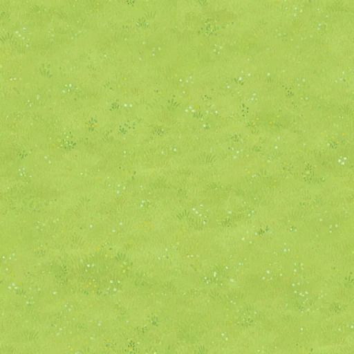
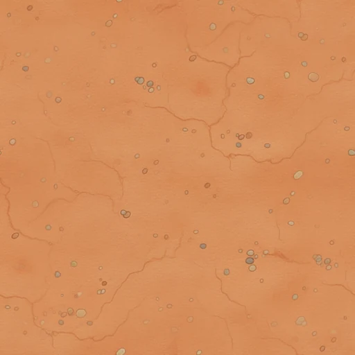
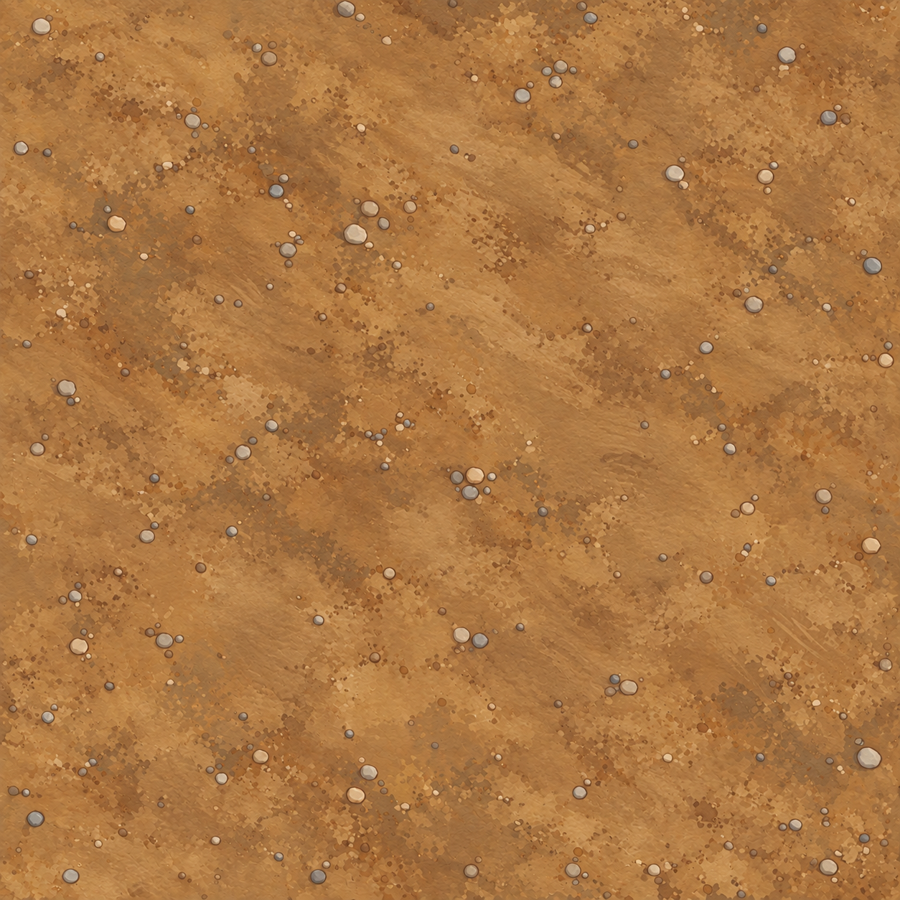

Road materials · approved references and refinements
World style

Painted meadow

Original clay reuse
Approved plot paving
Refined dirt · mirrored 2×2 repeat

Refined stone · mirrored 2×2 repeat
 World style
World style Approved plot paving
Approved plot paving